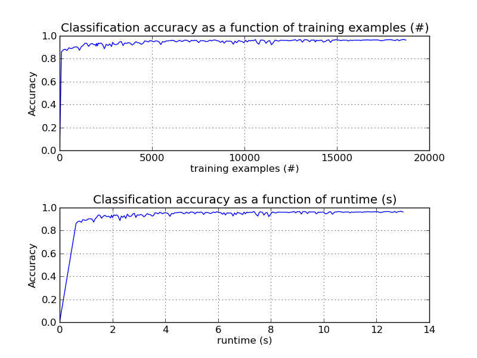

Out-of-core classification of text documents¶
This is an example showing how scikit-learn can be used for classification using an out-of-core approach.
Out-of-core learning means that we can learn from data that would not fit into the computer main memory. To achieve this goal we make use of an online classifier (i.e. that supports the partial_fit method) that will be fed with batches of examples. Moreover, to guarantee that the features space remains the same over time we leverage the HashingVectorizer class that will project each example into the same input space. This is especially useful in the case of text classification where new features (e.g. words) are discovered on the fly.
The dataset used in this example is Reuters-21578 as provided by the UCI ML repository. It will be automatically downloaded and uncompressed in the current directory on first run.
The plot represents is the learning curve of the classifier i.e. the evolution of classification accuracy with the number of mini-batches fed to the classifier.
ReutersParser and ReutersStreamReader classes are utility classes to parse and stream examples to the main learning loop.
To limit the amount of consumed memory at any time we enqueue examples up to a fixed amount before calling the features transformation and learning routines. We then clear the examples queue and proceed with enqueuing again and so on.
To study the performance of the method we sample the first 1000 examples of the dataset and hold them out as separate testing data. We then use it to estimate accuracy after each mini-batch.
Script output:
Test set is 985 documents (132 positive)
100 train docs ( 6 positive) 985 test docs ( 132 positive) accuracy: 0.861 in 0.62s ( 161 docs/s)
975 train docs ( 127 positive) 985 test docs ( 132 positive) accuracy: 0.901 in 1.23s ( 795 docs/s)
1888 train docs ( 235 positive) 985 test docs ( 132 positive) accuracy: 0.924 in 1.81s ( 1043 docs/s)
2423 train docs ( 280 positive) 985 test docs ( 132 positive) accuracy: 0.887 in 2.28s ( 1061 docs/s)
3334 train docs ( 449 positive) 985 test docs ( 132 positive) accuracy: 0.950 in 2.83s ( 1177 docs/s)
4316 train docs ( 539 positive) 985 test docs ( 132 positive) accuracy: 0.938 in 3.45s ( 1251 docs/s)
5277 train docs ( 677 positive) 985 test docs ( 132 positive) accuracy: 0.954 in 4.04s ( 1305 docs/s)
6250 train docs ( 779 positive) 985 test docs ( 132 positive) accuracy: 0.951 in 4.67s ( 1338 docs/s)
7126 train docs ( 844 positive) 985 test docs ( 132 positive) accuracy: 0.960 in 5.19s ( 1373 docs/s)
8116 train docs ( 982 positive) 985 test docs ( 132 positive) accuracy: 0.962 in 5.82s ( 1395 docs/s)
9102 train docs ( 1122 positive) 985 test docs ( 132 positive) accuracy: 0.953 in 6.40s ( 1422 docs/s)
10061 train docs ( 1224 positive) 985 test docs ( 132 positive) accuracy: 0.960 in 6.98s ( 1440 docs/s)
10974 train docs ( 1336 positive) 985 test docs ( 132 positive) accuracy: 0.962 in 7.63s ( 1438 docs/s)
11955 train docs ( 1485 positive) 985 test docs ( 132 positive) accuracy: 0.961 in 8.27s ( 1446 docs/s)
12938 train docs ( 1611 positive) 985 test docs ( 132 positive) accuracy: 0.964 in 9.00s ( 1437 docs/s)
13732 train docs ( 1697 positive) 985 test docs ( 132 positive) accuracy: 0.962 in 9.58s ( 1433 docs/s)
14370 train docs ( 1751 positive) 985 test docs ( 132 positive) accuracy: 0.950 in 10.14s ( 1417 docs/s)
15336 train docs ( 1857 positive) 985 test docs ( 132 positive) accuracy: 0.962 in 10.81s ( 1418 docs/s)
16308 train docs ( 1968 positive) 985 test docs ( 132 positive) accuracy: 0.959 in 11.48s ( 1420 docs/s)
17281 train docs ( 2136 positive) 985 test docs ( 132 positive) accuracy: 0.961 in 12.08s ( 1430 docs/s)
18271 train docs ( 2257 positive) 985 test docs ( 132 positive) accuracy: 0.968 in 12.69s ( 1440 docs/s)
Python source code: plot_out_of_core_classification.py
# Author: Eustache Diemert <eustache@diemert.fr>
# License: BSD 3 clause
from __future__ import print_function
import time
import re
import os.path
import fnmatch
import sgmllib
import urllib
import tarfile
import numpy as np
import pylab as pl
from sklearn.feature_extraction.text import HashingVectorizer
from sklearn.linear_model.stochastic_gradient import SGDClassifier
import itertools
###############################################################################
# Reuters Dataset related routines
###############################################################################
def _not_in_sphinx():
# Hack to detect whether we are running by the sphinx builder
return '__file__' in globals()
class ReutersParser(sgmllib.SGMLParser):
"""Utility class to parse a SGML file and yield documents one at a time."""
def __init__(self, verbose=0):
sgmllib.SGMLParser.__init__(self, verbose)
self._reset()
def _reset(self):
self.in_title = 0
self.in_body = 0
self.in_topics = 0
self.in_topic_d = 0
self.title = ""
self.body = ""
self.topics = []
self.topic_d = ""
def parse(self, fd):
self.docs = []
for chunk in fd:
self.feed(chunk)
for doc in self.docs:
yield doc
self.docs = []
self.close()
def handle_data(self, data):
if self.in_body:
self.body += data
elif self.in_title:
self.title += data
elif self.in_topic_d:
self.topic_d += data
def start_reuters(self, attributes):
pass
def end_reuters(self):
self.body = re.sub(r'\s+', r' ', self.body)
self.docs.append({'title': self.title,
'body': self.body,
'topics': self.topics})
self._reset()
def start_title(self, attributes):
self.in_title = 1
def end_title(self):
self.in_title = 0
def start_body(self, attributes):
self.in_body = 1
def end_body(self):
self.in_body = 0
def start_topics(self, attributes):
self.in_topics = 1
def end_topics(self):
self.in_topics = 0
def start_d(self, attributes):
self.in_topic_d = 1
def end_d(self):
self.in_topic_d = 0
self.topics.append(self.topic_d)
self.topic_d = ""
class ReutersStreamReader():
"""Iterate over documents of the Reuters dataset.
The Reuters archive will automatically be downloaded and uncompressed if
the `data_path` directory does not exist.
Documents are represented as dictionaries with 'body' (str),
'title' (str), 'topics' (list(str)) keys.
"""
DOWNLOAD_URL = ('http://archive.ics.uci.edu/ml/machine-learning-databases/'
'reuters21578-mld/reuters21578.tar.gz')
ARCHIVE_FILENAME = 'reuters21578.tar.gz'
def __init__(self, data_path):
self.data_path = data_path
if not os.path.exists(self.data_path):
self.download_dataset()
def download_dataset(self):
"""Download the dataset."""
print("downloading dataset (once and for all) into %s" %
self.data_path)
os.mkdir(self.data_path)
def progress(blocknum, bs, size):
total_sz_mb = '%.2f MB' % (size / 1e6)
current_sz_mb = '%.2f MB' % ((blocknum * bs) / 1e6)
if _not_in_sphinx():
print('\rdownloaded %s / %s' % (current_sz_mb, total_sz_mb),
end='')
urllib.urlretrieve(self.DOWNLOAD_URL,
filename=os.path.join(self.data_path,
self.ARCHIVE_FILENAME),
reporthook=progress)
if _not_in_sphinx():
print('\r', end='')
print("untaring data ...")
tfile = tarfile.open(os.path.join(self.data_path,
self.ARCHIVE_FILENAME),
'r:gz')
tfile.extractall(self.data_path)
print("done !")
def iterdocs(self):
"""Iterate doc by doc, yield a dict."""
for root, _dirnames, filenames in os.walk(self.data_path):
for filename in fnmatch.filter(filenames, '*.sgm'):
path = os.path.join(root, filename)
parser = ReutersParser()
for doc in parser.parse(open(path)):
yield doc
###############################################################################
# Main
###############################################################################
# Create the hasher and limit the number of features to a reasonable maximum
hasher = HashingVectorizer(decode_error='ignore', n_features=2 ** 18)
# Create an online classifier i.e. supporting `partial_fit()`
classifier = SGDClassifier()
# Create the data_streamer that parses Reuters SGML files and iterates on
# documents as a stream
data_streamer = ReutersStreamReader('reuters').iterdocs()
# Here we propose to learn a binary classification between the positive class
# and all other documents."""
all_classes = np.array([0, 1])
# NB: the 'acq' class was chosen as it is more or less evenly distributed in
# the Reuters files. For other datasets, one should take care of creating a
# test set with a realistic portion of positive instances.
positive_class = 'acq'
def get_minibatch(doc_iter, size, transformer=hasher,
pos_class=positive_class):
"""Extract a minibatch of examples, return a tuple X, y.
Note: size is before excluding invalid docs with no topics assigned.
"""
data = [('{title}\n\n{body}'.format(**doc), pos_class in doc['topics'])
for doc in itertools.islice(doc_iter, size)
if doc['topics']]
if not len(data):
return np.asarray([], dtype=int), np.asarray([], dtype=int)
X, y = zip(*data)
return transformer.transform(X), np.asarray(y, dtype=int)
def iter_minibatchs(doc_iter, minibatch_size):
"""Generator of minibatchs."""
X, y = get_minibatch(doc_iter, minibatch_size)
while X.shape[0]:
yield X, y
X, y = get_minibatch(doc_iter, minibatch_size)
# structure to track accuracy history
stats = {'n_train': 0, 'n_test': 0, 'n_train_pos': 0, 'n_test_pos': 0,
'accuracy': 0.0, 'accuracy_history': [(0, 0)], 't0': time.time(),
'runtime_history': [(0, 0)]}
# First we hold out a number of examples to estimate accuracy
n_test_documents = 1000
X_test, y_test = get_minibatch(data_streamer, 1000)
stats['n_test'] += len(y_test)
stats['n_test_pos'] += sum(y_test)
print("Test set is %d documents (%d positive)" % (len(y_test), sum(y_test)))
def progress(stats):
"""Report progress information, return a string."""
duration = time.time() - stats['t0']
s = "%(n_train)6d train docs (%(n_train_pos)6d positive) " % stats
s += "%(n_test)6d test docs (%(n_test_pos)6d positive) " % stats
s += "accuracy: %(accuracy).3f " % stats
s += "in %.2fs (%5d docs/s)" % (duration, stats['n_train'] / duration)
return s
# We will feed the classifier with mini-batches of 100 documents; this means
# we have at most 100 docs in memory at any time.
minibatch_size = 100
# Main loop : iterate on mini-batchs of examples
minibatch_iterators = iter_minibatchs(data_streamer, minibatch_size)
for i, (X_train, y_train) in enumerate(minibatch_iterators):
# update estimator with examples in the current mini-batch
classifier.partial_fit(X_train, y_train, classes=all_classes)
# accumulate test accuracy stats
stats['n_train'] += X_train.shape[0]
stats['n_train_pos'] += sum(y_train)
stats['accuracy'] = classifier.score(X_test, y_test)
stats['accuracy_history'].append((stats['accuracy'], stats['n_train']))
stats['runtime_history'].append((stats['accuracy'],
time.time() - stats['t0']))
if i % 10 == 0:
print(progress(stats))
###############################################################################
# Plot results
###############################################################################
def plot_accuracy(x, y, plot_placement, x_legend):
"""Plot accuracy as a function of x."""
x = np.array(x)
y = np.array(y)
pl.subplots_adjust(hspace=0.5)
pl.subplot(plot_placement)
pl.title('Classification accuracy as a function of %s' % x_legend)
pl.xlabel('%s' % x_legend)
pl.ylabel('Accuracy')
pl.grid(True)
pl.plot(x, y)
pl.figure(1)
# Plot accuracy evolution with #examples
accuracy, n_examples = zip(*stats['accuracy_history'])
plot_accuracy(n_examples, accuracy, 211, "training examples (#)")
# Plot accuracy evolution with runtime
accuracy, runtime = zip(*stats['runtime_history'])
plot_accuracy(runtime, accuracy, 212, 'runtime (s)')
pl.show()
Total running time of the example: 13.14 seconds